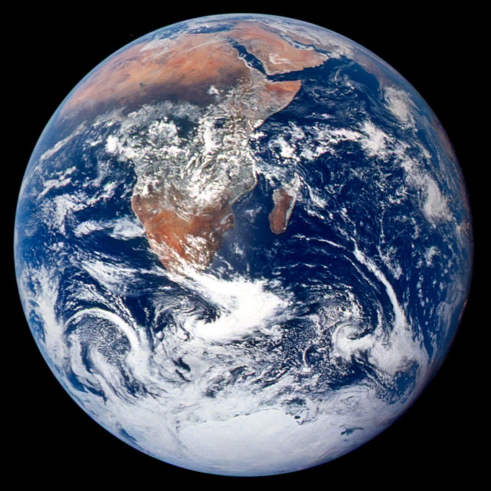
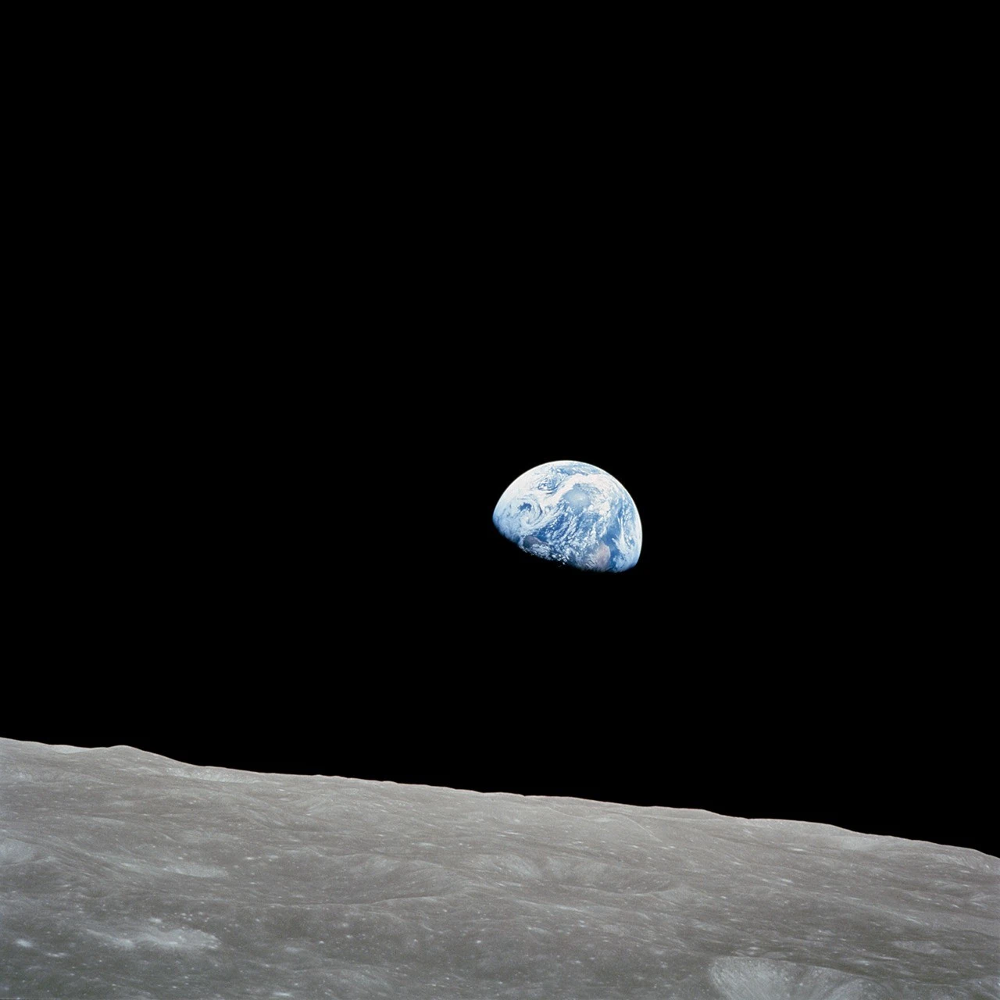
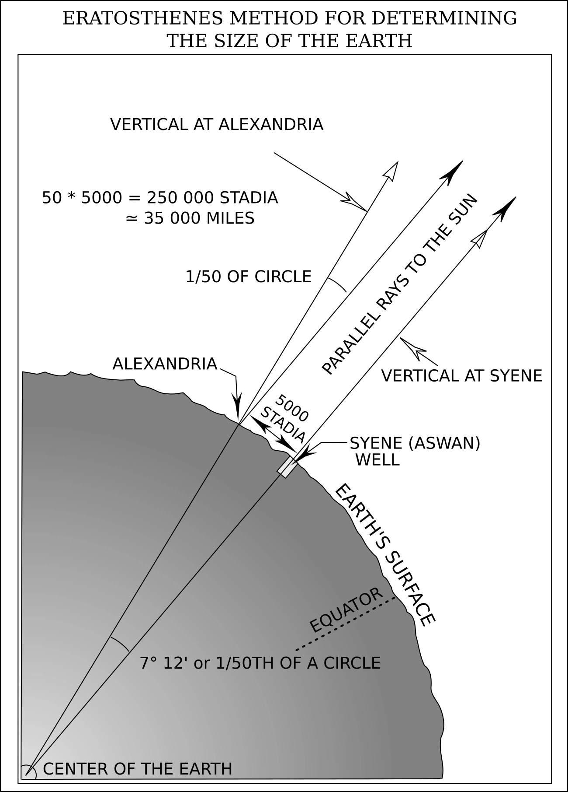

Eratosthenes240 BC → TodayGeometryEarth's CircumferenceK–12
Over 2,200 years ago, a librarian in Egypt measured the size of the entire Earth using nothing but a stick, a shadow, and brilliant geometry — and produced a remarkably close estimate. We can repeat the idea with a simple classroom model. Here's how he did it, and how scientists refined the measurement ever since.
One big idea, four ways to explore
Circumference means the distance all the way around. A shadow can help us measure it! Choose a challenge with your teacher; everyone can start by looking and predicting.
K–2 · Notice and tell
Point to the Sun, stick, and shadow. Predict: will a more tilted ray make a longer shadow? Try the slider with an adult. Draw or tell what changed. Use a ball and two craft sticks under one distant lamp; never look directly at the Sun.
3–5 · Measure and multiply
A full turn is 360°. The 7.2° example is one of 50 equal pieces. If one piece is 800 km long, how far is 50 pieces? Explain with a drawing or repeated addition.
6–8 · Predict, test, explain
Keep distance at 800 km. Predict what doubling the angle will do to the estimate. Test 7.2° and 14.4°. Explain why a larger fraction of the circle gives a smaller whole circumference.
9–12 · Geometry and uncertainty
Derive C = 360d/θ from arc proportions. For a 1 m stick, θ = arctan(shadow length / stick height). Compare 7.1°, 7.2°, and 7.3° at 800 km. Which measurement needs greater care? Explain why real cities require meridian distance, local solar noon, and two zenith angles.
The Big Question: How Big is Earth?
For most of human history, no one knew how large the Earth was. Ancient peoples could see the horizon, feel the curve of a coastline, and watch ships disappear hull-first over the sea — enough to know Earth was round — but measuring it seemed impossible.
How would you measure the size of a planet you're standing on? You can't see it from space. You can't drive around it with an odometer. The answer required an extraordinary leap of imagination: using the angle of sunlight and the known distance between two cities.
Key idea: If the Sun is so far away that its rays hit Earth in parallel lines, then any difference in shadow angles between two cities must be caused by the curvature of Earth itself. Measure the angle and the distance, and you can calculate the whole circumference.
Eratosthenes — The Librarian Who Measured a Planet
📜
Eratosthenes of Cyrene (276–194 BC) was the chief librarian of the great Library of Alexandria in Egypt — the largest collection of knowledge in the ancient world. He was a mathematician, geographer, astronomer, and poet. His contemporaries called him "Beta" (second best) because he excelled at everything but was never the single greatest in one field. However, his measurement of Earth's circumference, made around 240 BC, stands as one of the most remarkable scientific achievements in history.
The Clue in a Well
Eratosthenes read a curious report from the city of Syene (modern-day Aswan, Egypt): on the summer solstice at noon, the Sun shone straight down into a deep well — no shadow on the walls, because the Sun was directly overhead. He also noticed that on the same day, at the same time in Alexandria (about 800 km to the north), a vertical stick cast a shadow.
With a distant Sun and nearly parallel rays, different local vertical directions are explained by a curved Earth. Two shadows alone do not rule out every imagined nearby-Sun model; many independent observations help test the explanation.
The Four Steps of His Experiment
1
Identify a place where the Sun is directly overhead. Syene was known to have the Sun shine straight down a deep well on the summer solstice — meaning the Sun was at exactly 90° (directly overhead) at noon.
2
Measure the shadow angle in Alexandria on the same day. Eratosthenes placed a stick (called a gnomon) vertically in the ground in Alexandria and measured the angle of its shadow at noon on the summer solstice. He found it was 7.2° — exactly 1/50th of a full circle (360°).
3
Understand why that angle exists. Because the Sun's rays are parallel, the 7.2° difference in shadow angle equals the angle between Syene and Alexandria as seen from Earth's center. In other words, the arc between the two cities spans 1/50th of Earth's full circumference.
4
Multiply by 50. If the 800 km between the two cities equals 1/50th of the circumference, then the full circumference is 50 × 800 km = 40,000 km. This is a rounded classroom example. Earth measures about 40,008 km around a pole-to-pole meridian and 40,075 km around the equator. His historical result was recorded in stadia; its conversion to kilometres is uncertain.
Circumference = 360° ÷ Shadow Angle × Distance between cities
Eratosthenes: 360° ÷ 7.2° × 800 km = 50 × 800 = 40,000 km
What is a gnomon? A gnomon (NOH-mon) is simply a vertical stick or post used to cast a shadow and measure angles. Sundials use a gnomon. The word comes from Greek, meaning "one who knows" or "indicator." It is one of humanity's oldest scientific instruments.
Look closely: photographs and a textbook model
Tap any image to enlarge it. What can you observe in a photograph? What does a diagram help explain?

A planet seen from space. Apollo 17 photographed Earth in 1972. Find Africa and the bright Antarctic ice. A photograph records an observation; it does not provide the two-city distance needed for our calculation. Credit: NASA / Johnson Space Center, AS17-148-22727. Public domain, U.S. government work. Source · NASA usage guidance.

Earth has a day side and a night side. Bill Anders took Earthrise from Apollo 8 in 1968. The edge between light and dark is different from the outer edge of Earth. Trace both and discuss which one sunlight creates. Credit: NASA / Bill Anders, AS08-14-2383. Public domain, U.S. government work. Source.

The same angle in two places. Follow the parallel sunlight and the lines toward Earth's center. The angle at Alexandria matches the central angle, which tells us what fraction of Earth's circle lies between the cities. This is an explanatory diagram, with distances and sticks drawn for clarity. Credit: Defense Mapping Agency, Geodesy for the Layman, 1984, figure 1; vector redrawing by Gregors, via Wikimedia Commons. Public domain, U.S. government work. Textbook and rights statement · Vector source and public-domain statement.
Replicate Eratosthenes' Experiment
Predict: keep distance fixed and double the angle. Will the estimated planet become larger or smaller? Open Controls, test your prediction, then explain it using the yellow arc.
Parallel sunlight reaches two sticks pointing away from Earth's center. One has no shadow; the other makes the same angle with sunlight as the angle between the cities at the center. The lower view magnifies a 1 m stick and its shadow.
Model assumptions and a real-world test
We assume a spherical Earth, parallel rays, cities on one meridian, and the Sun overhead at the southern city. Sticks are enlarged; the globe shows angle, not a map. Changing distance or angle independently represents a new hypothetical planet estimate. Real Earth is slightly flattened. For a class measurement, record a vertical stick's height and shadow on level ground at local solar noon; partner with another school and compare zenith angles and meridian distance. Do not look at the Sun.
Shadow Angle7.2degrees
Arc Distance800km
Student investigation · 15–25 minutes
Round Earth or flat Earth? Let the predictions compete.
Science does not ask which idea sounds confident or gets the most views. It asks which model makes predictions that match repeatable observations. Run all three stations, reveal the evidence, then write your verdict.
🧪Lab rule: Be respectful of people and ruthless with predictions. An idea earns trust when the same model explains many different observations.
1 · Horizon2 · Shadows3 · Eclipse
01
Boat hide-and-seek
Change the distance
Globe predictsThe curved surface blocks the hull first; more of the boat hides as distance increases.
Flat plane predictsThe whole boat only looks smaller. Zoom should restore every part of it.
Loading ocean…
Hidden height (model)2.0 m
What disappears?Hull visible
Scale: 1 scene unit = 1 metre; Earth radius 6,371,000 m; sailboat 16 m long with a 20 m mast. The camera sits at your chosen eye height and looks toward the geometric horizon. Zoom changes the field of view, never the boat’s size. Shared LiquidEngine CGI water adds small animated waves; readouts use still sea level. This idealized model omits refraction, tides, and weather, and is not a filmed observation.
Model prediction: Distant objects are hidden bottom-first, and zoom cannot recover the part below the horizon. That matches a curved surface.
02
Two-stick shadow test
Make a prediction
Distant Sun + globe predictsParallel sunlight makes different angles because each stick points away from Earth's center.
Flat plane predictsA nearby Sun could make different angles—but every city pair must point to one consistent Sun height.
The stick is 74 drawing units tall; shadow length = 74 × tan(angle). The Sun icon marks illumination, not a scaled Sun position.
7.2°
City distance800 km
Calculated circumference40,000 km
Compare with real measurements: Repeating this experiment with many north–south city pairs produces roughly the same 40,000 km globe. A nearby-Sun flat model gives conflicting Sun heights.
03
The eclipse shadow challenge
Watch the edge
Sphere predictsEarth casts a circular shadow from every orientation.
Disk predictsA disk only casts a circle face-on; most other angles make a stretched ellipse or thin line.
Lunar eclipse · shadow edge stays curved
Schematic animation: sizes, orbital distances, timing, and the fuzzy penumbra are omitted. It illustrates a prediction; compare it with photographs of real lunar eclipses.
Model prediction: Earth's shadow on the Moon is always round. A sphere is the only simple shape that produces a circular silhouette from every direction.
Your evidence notebook
Complete a CER: one clear claim, two or more observations, and reasoning that connects them. Your writing stays on this device and is not submitted.
Others Who Measured the Earth
Eratosthenes wasn't the last to tackle this problem. Over the next 2,000 years, scientists across the world refined the measurement using better instruments, higher mountains, and eventually satellites.
240 BC
Eratosthenes of Cyrene
~40,000 km · rounded example
Using shadow angles in Alexandria and Syene. He measured the arc at 7.2° and the distance at 5,000 stadia. Depending on the exact length of a stadion used, his result falls between 39,375 km and 46,250 km — with the most likely value of ~40,000 km being remarkably accurate.
100 BC
Poseidonius of Apamea
~38,600 km · 3.7% off
A Greek philosopher and polymath, Poseidonius used the star Canopus rather than the Sun. He measured the angle difference of Canopus above the horizon at Rhodes and Alexandria, then multiplied by the distance between them. His estimate ranged from 29,000 km to 38,600 km across different attempts — the latter being quite good. Ironically, his lower estimate was the one Columbus used centuries later, leading Columbus to badly underestimate how far away Asia was.
827 AD
Al-Ma'mun's Expedition (Baghdad)
~40,250 km · 0.4% off
The Abbasid Caliph Al-Ma'mun ordered two teams of surveyors to walk in opposite directions along a flat plain in Mesopotamia (modern Iraq), measuring how far they had to travel before the North Star's altitude changed by exactly one degree. The average of their results gave a degree of latitude of about 111.8 km — implying a circumference of around 40,248 km. Extraordinarily precise for the 9th century.
1030 AD
Al-Biruni of Khwarezm
~40,248 km · 0.4% off
The Islamic scholar Abu Rayhan Al-Biruni devised an entirely new method requiring only a single person and a mountain. He measured the height of a mountain, then used a special instrument to measure the dip angle of the horizon from the summit. Combining these two measurements with trigonometry, he calculated Earth's radius — and thus its circumference — to within 0.4% of the modern value. This technique required no second city and no team of surveyors.
1669
Jean Picard (France)
~40,062 km · 0.03% off
French astronomer Jean Picard was the first to use telescopic sights and triangulation to measure a meridian arc. He carefully surveyed 1.1° of latitude along the Paris meridian using a chain of triangles and measured star angles with a precision instrument. His result of 40,062 km was so accurate that Isaac Newton used it to verify his law of universal gravitation — the new precision confirmed Newton's predictions perfectly.
1799
Méchain & Delambre (France)
~40,009 km · 0.02% off
Pierre Méchain and Jean-Baptiste Delambre spent seven years (1792–1799) measuring the meridian from Dunkirk to Barcelona, covering 9.5° of latitude with unprecedented precision. Their mission was not just scientific — it was political. The French Revolutionary government wanted a universal unit of measurement based on nature. The result: the metre was defined as 1/10,000,000 of the distance from the North Pole to the equator. Every metre you measure today is a direct descendant of their survey of Earth's circumference.
Today
GPS Satellites & Laser Ranging
40,075.017 km · exact
Modern measurement uses a network of GPS satellites, ground stations, and laser ranging to track Earth's exact shape in real time. Earth is not a perfect sphere — it bulges slightly at the equator due to its rotation (equatorial circumference: 40,075 km; polar circumference: 40,008 km). The difference is 67 km — less than 0.2%. Not bad for a shadow and a stick.
How Accurate Were They?
Scientist
Year
Result (km)
Error
Accuracy
Eratosthenes
240 BC
~40,000
Unit conversion uncertain
Not precisely known
Poseidonius
100 BC
~38,600
3.7%
96.3%
Al-Ma'mun's team
827 AD
~40,250
0.4%
99.6%
Al-Biruni
1030 AD
~40,248
0.4%
99.6%
Jean Picard
1669
40,062
0.03%
99.97%
Méchain & Delambre
1799
40,009
0.02%
99.98%
GPS / Modern
Today
40,075.017
0.000%
100%
Why Measuring Earth's Circumference Matters
📏
The Metre Was Born From It
The metric system — used by nearly every country on Earth — was literally defined as a fraction of Earth's circumference. One metre was set as 1/10,000,000 of the distance from equator to pole. Every ruler, every kilometre, every km/h speed limit descends from this measurement.
🧭
Navigation and Cartography
Accurate maps require knowing Earth's size. Before Picard's 1669 measurement, maps had systematic errors that led ships astray. Knowing the exact circumference let navigators calculate longitude and latitude with far greater precision.
🛰️
GPS and Satellite Orbits
Every GPS satellite knows Earth's exact shape and circumference. Your phone uses this to triangulate your position to within a few metres. Even the height and speed of satellite orbits are calculated from Earth's known size and gravity.
🔭
Verifying Newton's Laws
When Picard measured Earth's circumference precisely in 1669, Newton used that number to check whether his theory of gravity correctly predicted the Moon's orbit. It did — confirming one of the greatest scientific theories in history.
Practice Problems
Use the formula: Circumference = 360° ÷ angle × distance. Round to the nearest whole number unless stated.
Easy1. Eratosthenes measured a shadow angle of 7.2° and a city distance of 800 km. Use his formula to calculate Earth's circumference in km.
Hint: 360 ÷ 7.2 × 800 = 50 × 800 = 40,000 km
Easy2. If you measured a shadow angle of 9° between two cities that are 1,000 km apart, what circumference would you calculate?
Hint: 360 ÷ 9 × 1,000 = 40 × 1,000 = 40,000 km
Medium3. Poseidonius measured a star angle of 7.5° between Rhodes and Alexandria (distance: 800 km). What circumference did he calculate? Round to the nearest 100 km.
Hint: 360 ÷ 7.5 × 800 = 48 × 800 = 38,400 km
Medium4. Eratosthenes' result (40,000 km) differs from the modern value (40,075 km) by how many km?
Hint: 40,075 − 40,000 = 75 km
Challenge5. One degree of latitude equals about 111 km on Earth's surface. If a student in your city measures a shadow angle of 4.3° compared to a city 478 km south where the Sun is directly overhead, how close is their calculated circumference to the real value? Calculate their result first, then find the % error to 1 decimal place. (% error = |result − 40,075| ÷ 40,075 × 100)
Challenge6. The metre was defined as 1/10,000,000 of the distance from the equator to the North Pole. Using Earth's polar circumference of 40,008 km, calculate this pole-to-equator distance in km, then check whether it equals exactly 10,000 km (one ten-millionth of that should be 1 m). Enter the distance in km.
Hint: Equator to pole = polar circumference ÷ 4 = 40,008 ÷ 4 = 10,002 km. The metre was meant to be exactly 1/10,000,000 of this (= 1.0002 m by modern standards — very close!).